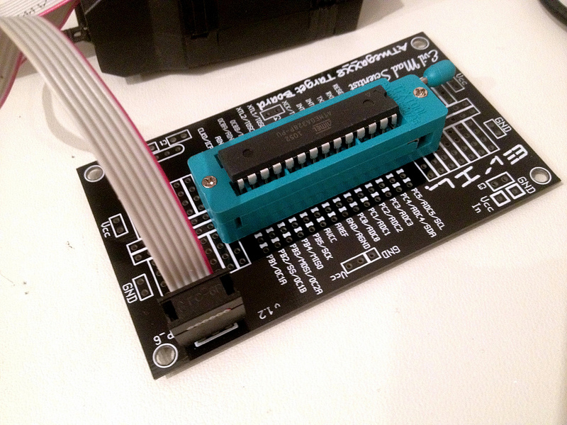

Arduino workshop voor beginners
Arduino Day 2014
Kenny Rasschaert, Inuits
Arduino =
open hardware + open software
Hardware

Foto: Tom Igoe (CC BY-NC-SA 2.0)
Een Arduino bordje in detail

Er zijn ook grotere

...en kleinere

Arduino + breadboard

Foto: Flickr gebruiker Abuakel (CC BY-NC-SA 2.0)
Arduino + shield(s)

Foto: John Boxall (CC BY-NC-SA 2.0)
Solderen

Foto: Mario Klingemann (CC BY-NC-SA 2.0)
Shrimp

Foto: Les Pounder (CC BY-NC-SA 2.0)
Software

Foto: W.Rebel, via Wikimedia Commons (CC BY-SA 3.0)
Arduino IDE

Screenshot: Wikipedia contributor Lemio (CC BY-SA 3.0)
Command line - Ino

Bootloader
Foto: Flickr gebruiker Daijo1 (CC BY-NC-ND 2.0)
Minimaal programma
void setup() {
}
void loop() {
}
Blink
// Pin 13 is op de meeste Arduino bordjes verbonden met een ingebouwde LED.
// Geef hem een naam:
int led = 13;
// De setup functie wordt één keer uitgevoerd als je op de reset knop drukt:
void setup() {
// initializeer de digitale pin als een output.
pinMode(led, OUTPUT);
}
// De loop functie wordt altijd opnieuw en opnieuw uitgevoerd:
void loop() {
digitalWrite(led, HIGH); // zet de LED aan (HIGH is een hoog voltage)
delay(1000); // wacht één seconde
digitalWrite(led, LOW); // zet de LED af (LOW is een laag voltage)
delay(1000); // wacht één seconde
}